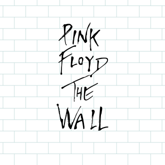

Pink Floyd
The Wall
L’album The Wall fait partie d’un grand projet concept à trois volets, le premier étant l’album lui-même, le deuxième sa représentation sur scène et, finalement, un long métrage d’après l’histoire contée dans l’album. La réalisation du projet s’étale sur quatre années ; le projet est créé en 1978, et en dernière phase, le film sort en 1982. Comme les trois albums précédents du groupe (The Dark Side of the Moon, Wish You Were Here et Animals), The Wall est un album-concept, mais aussi un opéra-rock ; il traite du thème de l'isolement et de ses conséquences mentales : les chansons suivent toutes un fil conducteur pour former une histoire. De ce fait, l’album est considéré comme plus dur et plus théâtral que les précédents albums de Pink Floyd.
The Wall marque la dernière véritable entente entre les deux auteurs-compositeurs du groupe, Roger Waters et David Gilmour. Les tensions sont alors croissantes au sein du groupe, avec Waters devenu sa seule force motrice — il signe seul la quasi-totalité des titres de l'album — et finissent par mener à l’exclusion du claviériste Richard Wright, qui ne réintègre officiellement le groupe qu’en 1994, longtemps après le départ de Waters. Ce dernier quitte le groupe en 1985, après l’album suivant, The Final Cut, pour entamer une carrière solo.
Titres
Toutes les paroles sont écrites par Roger Waters. Les musiques sont originellement composées par Waters, puis arrangées par le groupe après que Waters ait présenté aux autres membres la maquette de l'album. Trois musiques sont de David Gilmour : Young Lust, Comfortably Numb et Run Like Hell. Pour The Trial, la musique est de Bob Ezrin et les arrangements sont de Michael Kamen.
Disque 1
Face A
- In the Flesh? Roger Waters
- The Thin Ice David Gilmour, Roger Waters
- Another Brick in the Wall, Part I Roger Waters
- The Happiest Days of Our Lives Roger Waters
- Another Brick in the Wall, Part II David Gilmour, Roger Waters, chorale d'Islington Green School
- Mother David Gilmour, Roger Waters
Face B
- Goodbye Blue Sky David Gilmour
- Empty Spaces Roger Waters
- Young Lust (Roger Waters, David Gilmour) David Gilmour, Roger Waters
- One of My Turns Roger Waters
- Don't Leave Me Now Roger Waters, David Gilmour
- Another Brick in the Wall, Part III Roger Waters
- Goodbye Cruel World Roger Waters
Disque 2
Face C
- Hey You David Gilmour, Roger Waters
- Is There Anybody Out There? Roger Waters
- Nobody Home Roger Waters
- Vera Roger Waters
- Bring the Boys Back Home Roger Waters
- Comfortably Numb (Roger Waters, David Gilmour) David Gilmour, Roger Water
Face D
- The Show Must Go On David Gilmour
- In the Flesh Roger Waters
- Run Like Hell (Roger Waters, David Gilmour) Roger Waters
- Waiting for the Worms David Gilmour, Roger Waters
- Stop Roger Waters
- The Trial (Roger Waters, Bob Ezrin) Roger Waters
- Outside the Wall Roger Waters
Musiciens
L'équipe réunie pour l’enregistrement et la production de l’album est composée des personnes suivantes[157] :
Pink Floyd
- Roger Waters - chant, basse, guitare acoustique sur Mother et Vera, guitare électrique sur Another Brick in the Wall Part III
- David Gilmour - chant, guitares électrique et acoustique, basse, séquenceur, synthétiseur, clavinet, percussions
- Nick Mason - batterie et percussions
Musiciens additionnels
- Wright[note 2] - piano acoustique et électrique, orgue Hammond, synthétiseur, clavinet, pédales basse
- Freddie Mandel - orgue Hammond (sur les deux In the Flesh)
- Bob Ezrin - producteur, arrangements, orchestrations, piano, harmonium, orgue Hammond, synthétiseur, chœurs
- Joe DiBlasi - guitare classique (sur Is There Anybody Out There?)
- Lee Ritenour - guitare rythmique (sur One of My Turns) et guitare acoustique (sur Comfortably Numb)
- James Guthrie - coproducteur, ingénieur du son, percussions, synthétiseur (sur Empty Spaces), séquenceur et batterie (sur The Happiest Days of Our Lives)
- Bobbye Hall - congas et bongos sur Run Like Hell
- Trudy Young - voix dans le rôle de la groupie sur One of My Turns
- Harry Waters - voix enfantine sur Goodbye Blue Sky
- Chris Fitzmorris - voix masculine au téléphone à la fin de Young Lust
- Jeff Porcaro - batterie (sur Mother)
- Joe Porcaro - caisse claire (sur Bring the Boys Back Home)
- Frank Marrocco - concertina (sur Outside the Wall)
- Trevor Veitch - mandoline (sur Outside the Wall)
- Larry Williams - clarinette (sur Outside the Wall)
- Enfants de l’Islington Green School - chœurs (sur Another Brick in the Wall, part II)
- Bruce Johnston - chœurs
- Joe Chemay - chœurs
- Jon Joyce - chœurs
- Stan Farber - chœurs
- Jim Haas - chœurs
- Toni Tennille - chœurs sur The Show Must Go On et Waiting For The Worms
- Vicki Brown, Clare Torry - chœurs sur The Trial
- New York Opera - chœurs
- New York Orchestra - cordes